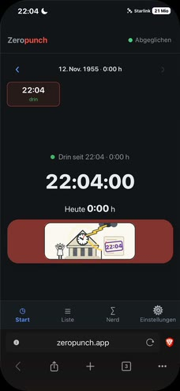

Punchen mit NFC-Kleber
Kleb einen NFC-Kleber an Spind, Pult, Notebook oder Tasche und halt das Handy daran. Der Punch ist gemacht. Auf dem iPhone geht oft auch dein Firmenbadge, wenn er einen NFC-Chip hat. Am Badge wird nichts verändert. Der Kleber enthält nichts über dich. Die Anleitung steht in den Einstellungen.

Video-Anleitung · iPhoneNFC-Kleber einrichtenAbspielen · 75 Sekunden